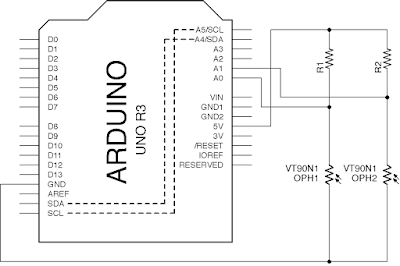

3.3 Arduino analogRead() -> Processing
3.3 Arduino analogRead() -> ProcessingAnalog Bar Chart效果電路圖程式碼ArduinoProcessing說明Analog V-T graph效果電路圖程式碼ArduinoProcessing說明動動腦
Analog Bar Chart
效果
將Arduino收到的兩個analog值用bar chart顯示出來。

電路圖

程式碼
Arduino
x1void setup(){2 Serial.begin(115200);3 pinMode(A0, INPUT);4 pinMode(A1, INPUT);5}6
7void loop(){8 int voltage0 = analogRead(A0);9 int voltage1 = analogRead(A1);10 Serial.print(voltage0);11 Serial.print(',');12 Serial.println(voltage1);13 delay(100);14}Processing
xxxxxxxxxx331import processing.serial.*;2Serial myPort;3
4int x_position, y_position;5
6void setup() {7 size(512, 512);8 println(Serial.list());9 myPort = new Serial(this, Serial.list()[9], 115200);10 myPort.bufferUntil('\n');11}12
13void draw() {14 //此處為空15}16
17void serialEvent(Serial myPort){18 String myString = myPort.readStringUntil('\n');19 myString = trim(myString);20
21 int data[] = int(split(myString, ','));22
23 for (int i = 0; i < data.length; i++) {24 print(data[i] + " ");25 }26 println();27
28 background(200);29 fill(255,0,0);30 rect(width/5, height*4/5, 80, - data[0]/3);31 fill(0,255,0);32 rect(width*3/5, height*4/5, 80, - data[1]/3);33}說明
Arduino程式可參考這裡。
Processing程式中，上半部分是跟之前的Serial接收是一樣的。後半部分:
fill(255,0,0);: 是填色，就是將長方形填上紅色。
rect(width/5, height*4/5, 80, - data[0]/3); : Processing預設畫長方形的模式是rect(x, y, width, height)，所以現在長方形的寬度是80, 高度是收到的data[0]/3，再乘收負號，令其向上增長(參考這裡)。width和height是keyword，就是setup()中size()的兩個值。所以現在都是512。
Analog V-T graph
效果
讀取Arduino的analog讀數，用時間軸顯示令其像示波器。

電路圖
程式碼
Arduino
xxxxxxxxxx141void setup(){2 Serial.begin(115200);3 pinMode(A0, INPUT);4 pinMode(A1, INPUT);5}6
7void loop(){8 int voltage0 = analogRead(A0);9 int voltage1 = analogRead(A1);10 Serial.print(voltage0);11 Serial.print(',');12 Serial.println(voltage1);13 delay(100);14}Processing
xxxxxxxxxx431import processing.serial.*;2Serial myPort;3
4int voltage0, voltage1;5long time;6
7void setup() {8 size(512, 512);9 println(Serial.list());10 myPort = new Serial(this, Serial.list()[9], 115200);11 myPort.bufferUntil('\n');12}13
14void draw() {15 //此處為空16}17
18void serialEvent(Serial myPort){19 String myString = myPort.readStringUntil('\n');20 myString = trim(myString);21
22 int data[] = int(split(myString, ','));23
24 for (int i = 0; i < data.length; i++) {25 print(data[i] + " ");26 }27 println();28
29 voltage0 = data[0];30 voltage1 = data[1];31
32 strokeWeight(4);33 stroke(255,0,0);34 point(time, height - voltage0/2);35 stroke(0,255,0);36 point(time, height - voltage1/2);37
38 time++;39 if (time > width) {40 time = 0;41 background(200);42 }43}說明
Arduino程式跟之前的一樣。
Processing中，收集完之資料之後，將兩個收集到的data放入voltage0和voltage1之中。
strokeWeight(4); : 是畫圖形的邊框粗度，4就是4個像素粗。
stroke(255,0,0); : 是邊框的顏色，用line()和point()就需要用stroke()來決定其顏色，而用rect()和ellipse()等就用stroke()來決定邊框顏色，用fill()來決定填滿顏色。
point(time, height - voltage0/2); : 是畫點，輸入的兩個參數是點的位置，由於Processing的y軸是由上至下的，所以在畫V-T graph時，需要收height減去收到的值，令其曲線上下反轉。而voltage0和voltage1的最大值是1023，畫面只有512高，所以要除2。(你可以試用map()指令來重新縮放 voltage0)